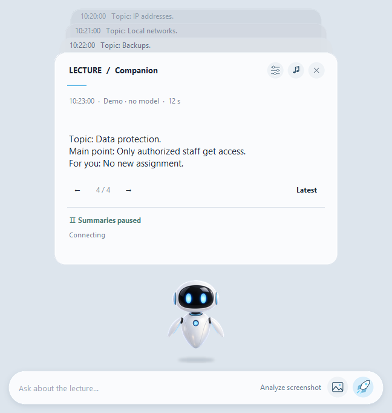

Windows 11 · x64
Lecture Companion
Follow Teams lectures with local caption summaries and explanations of a selected slide.
Preview · 2.4Before you startTeams Desktop and compatible drivers; recommended: 32 GB RAM, internal SSD and 25 GB free for the parts, ZIP and extraction. EXE is unsigned; a second clean-PC check is pending.
Place all four ZIP parts and JoinPortable.cmd in the same folder. The script checks sizes and SHA-256. Then extract the archive to an internal SSD.


How it works
- Download and join 4 parts
- Enable Teams captions
- Review text or a slide
First steps
Download all four parts and JoinPortable.cmd into one folder (about 5.8 GB). Run JoinPortable.cmd to verify and combine them, extract the entire ZIP and open LectureCompanion.exe.